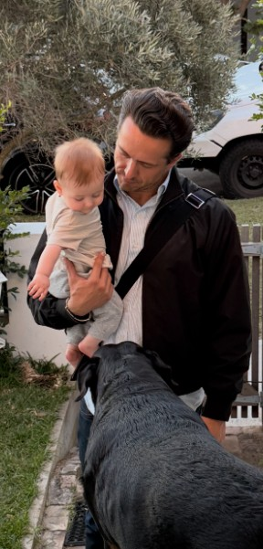

About me
Sydney-born. Shaped by the mountains.
I was born and raised in Sydney, and it's still home. Long before my career in tech sales, competitive snowsports took me all over the world, chasing winters from one hemisphere to the other and earning my CASI Level 2 instructor licence along the way.
Those years included living abroad, most memorably in Japan, which is still my favourite country. Living overseas taught me to adapt fast, connect with people from every background and perform when it counts.
The constant through all of it has been technology. I've been excited by it and curious about it my entire life, and getting to sell the platforms shaping how teams build software has never felt like just a job. That curiosity is a big part of why Cognition stands out to me.
- Home
- Sydney, Australia
- Favourite country
- Japan
- On snow
- Competitive snowsports · CASI Level 2 instructor
- First business
- Founder, Coogee Accommodation (2013–2019)
- Study
- Bachelor of Business Management, UTS